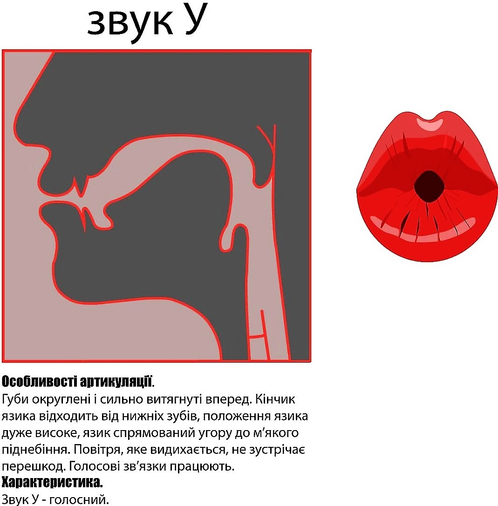

Артикуляція голосних
Голосні звуки в українському мовознавстві класифікують за трьома головними ознаками:
1) положення язика відносно вертикальної площини - підняття:
високого: [і], [у];
високо-середнього: [и];
середнього: [е], [о];
низького: [а].
2) положення язика відносно горизонтальної площини - рядність:
передній ряд: [і], [и], [е];
задній ряд:[а], [о], [у].
Голосні середнього ряду в українській мові відсутні.
3) участь губ у творенні звука:
лабіалізовані: [о], [у];
нелабіалізовані: [а], [е], [и], [і].
-
[а] – у наголошеній позиції це звук заднього ряду, низького підняття, нелабіалізований. Нижня щелепа опущена максимально, рот широко відкритий; язикове тіло відтягнуте назад до стінки глотки; положення спинки язика обнижене; м’яке піднебіння утворює зімкнення із задньою стінкою глотки, закриваючи прохід.
-
[о] – у сильній позиції це голосний заднього ряду, середнього підняття, лабіалізований, більш закритого типу, ніж [а]. При вимові займає проміжне положення між [а] та [у]; кінчик язика відтягнутий сильніше від нижніх зубів; м’яке піднебіння сильно підняте вгору; надгортанник близько до кореня язика; рот напіввідкритий, губи округлені, беруть активну участь у творенні звука.
-

[у] – у сильній позиції це голосний звук заднього ряду, високого підняття, лабіалізований. При вимові положення язика дуже високе; язикове тіло спрямоване до задньої частини твердого піднебіння; корінь язика і його спинка найбільш просунуті наперед у порівнянні з [а] та [о]; кінчик язика відтягнутий від передніх зубів і загнутий униз; мовний канал дуже вузький, губи дуже витягнуті вперед, утворюють між зубами та губами порожнину.
-

[е] – у наголошеній позиції звук переднього ряду, середнього підняття, нелабіалізований. Положення язика при вимові [е] нижче, ніж при вимові інших голосних переднього ряду; спинка язика просунута вперед, ближче до середньої частини твердого піднебіння, кінчик язика відтягнений від нижніх зубів; губи розтягнені в сторони, притиснуті до зубів, активної участі не беруть.
-

[и] – у сильній позиції це голосний звук переднього ряду, високо-середнього підняття, нелабіалізований. Передня частина спинки язика опукла й основною масою просунута вперед, корінь язика відсунений від задньої стінки глотки більше, ніж за вимови [е]; куточки губ розтягнені сильніше, ніж за вимови [е], та притиснуті до зубів, активної участі у творенні звука не беруть. Звук [и] вищий, ніж [е], але нижчий, ніж [і].
-
[і] 一 голосний переднього ряду, високого підняття, нелабіалізований. Під час вимови [і] ступінь підняття спинки язика до твердого піднебіння найвищий серед голосних переднього ряду; язик просувається до передньої частини твердого піднебіння або до верхніх зубів та альвеол, набуває опуклої форми; кінчик язика спадає вниз за нижніми зубами, може упиратися в нижні зуби; губи значно більше розтягнуті на боки, ніж при артикуляції [и] та [е], утворюють вузьку щілину, активної участі не беруть.